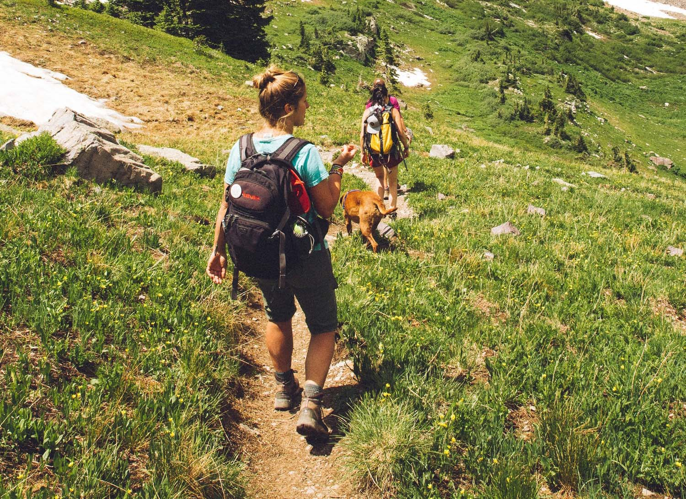
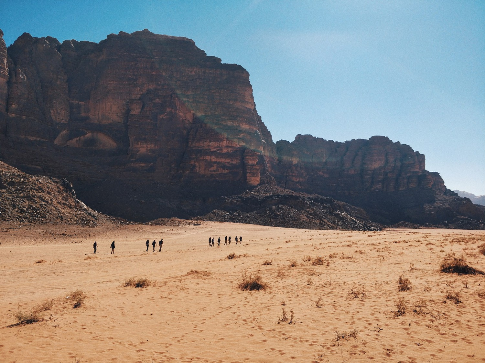
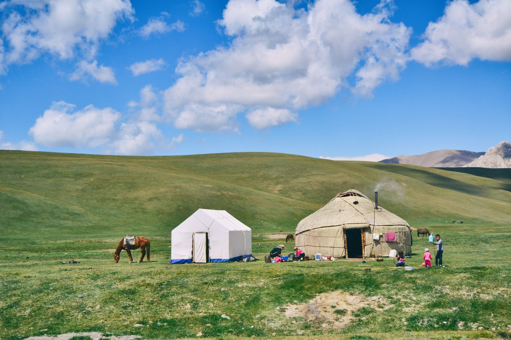
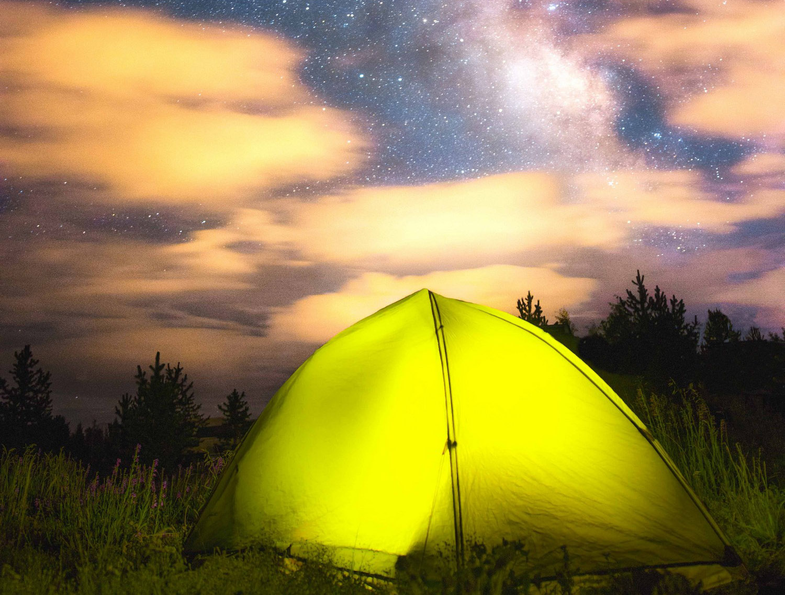
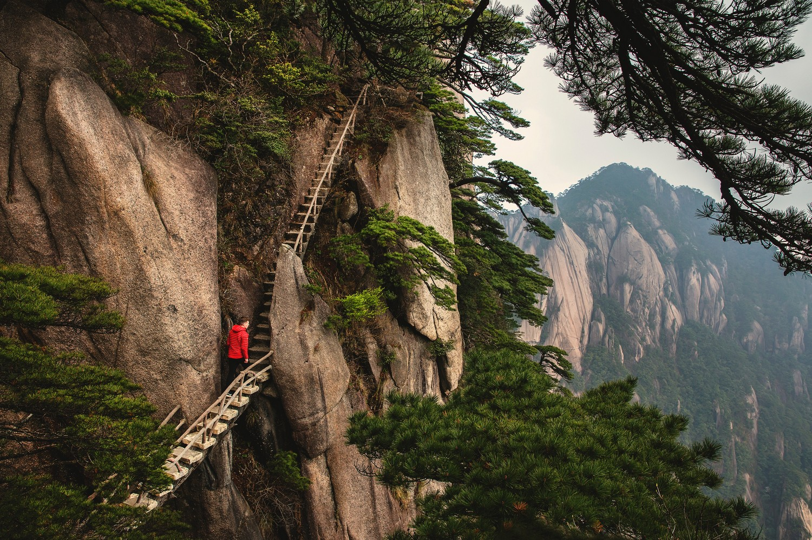

Our Hikes
Short hikes
Our short hikes are perfect for weekend getaways or teambuilding trips. Normally these are day trips from a local base, and do not require camping equipment.
Weekend in the Pyrénées
Wildlife Park Parc Naturel Régional des Pyrénées Catalanes. The trip includes a visit to a Cathar castle as well as an exhibition of local birds of prey.
Seven Mountains, Bergen

The "Seven Mountains" are the peaks surrounding the Norwegian city of Bergen. The Bergen Hiking Club offers an annual tour of these. Be sure to bring rain gear!
Monte Capanne, Tuscany

Located on the island of Elba, Monte Capanne is one of the highest peaks in Tuscany. Visit the Hermitage of San Cerbone, as well as the fort near the medieval village, which is over 800 years old. Spectacular views of other Islands of the archipelago, including Corisca, from the summit.
Camping Hikes
Camping hikes are longer than short hikes and include 3 or more nights camping. You may bring your own camping equipment, or we can supply it for you.
Atlas Mountains
M’Goun Massif is not the tallest mountain in Morocco, but the surrounding area is one of the more beautiful areas of the Atlas Mountains. Picturesque and physically challenging.
Yurt camping Mongolia
Experience Mongolian herding culture first-hand in this exciting two-week tour. Included are a short trip on the Trans-Siberian Railway and two days of horseback riding.
Yellowstone Park
Sleep under the stars in one of USAs largest wilderness parks. Yellowstone has exhilarating canyons, forests, rivers, as well as hot springs and geysers. The park is also home to a multitude of animal species.
Long Hikes
These are the most extreme of all of our extreme hikes, and are usually two weeks or longer. They include trekking, local culture and food, as well as nature excursions. These are our physically demanding hikes, so if you are planning to do one of these you should be in reasonably good physical shape!
Larapinta Trail, Australia

A 12-day trek on the Larapinta trail starting from and concluding at Alice Springs.
Patagonia, Argentina/Chile

A two-week intense tour, including Refugio Frey, Cerro Castillo, and Exploradores Glacier. This is a demanding tour, but well worth the effort!
Jammu and Kashmir, India
Some of the most breathtaking views of Northern India are included on this three-week tour, with an increasingly demanding hiking itinerary.